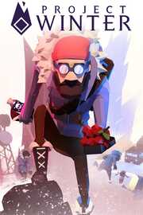

|  | |
| Playtime | Not Played |
| Last Activity | Never |
| Added | 10/29/2021 1:32:20 |
| Modified | Never |
| Completion Status | Not Played |
| Library | Xbox |
| Source | Xbox Game Pass |
| Platform | PC (Windows) |
| Release Date | 2/4/2021 |
| Community Score | |
| Critic Score | |
| User Score | |
| Genre | |
| Developer | Other Ocean Interactive |
| Publisher | Other Ocean Group |
| Feature | |
| Links | |
| Tag | Game Pass |
Betray your friends in this 8 person multiplayer focused on social deception and survival.
Communication and teamwork is essential to the survivors’ ultimate goal of escape. Gather resources, repair structures, and brave the wilderness together. Just beware that there are traitors within the group working to sabotage your chances of getting out alive by any means necessary.
Roles
========
Survivor:
As a survivor you will have to complete a series of objectives in order to call in one of several rescue vehicles and escape to win the game.
- Repair all the objectives to restore the cabin radio to working order.
- Break rocks, harvest berries and herbs, and cut down trees to earn crafting materials used to repair objectives, and help keep you alive.
- Explore crates found in the buildings scattered throughout the map which contain items that will help you survive and complete your objectives.
- Use the radio in the cabin to call in the emergency escape vehicle.
- Board the escape vehicle and escape with as many innocent survivors as possible.
- Use your keen senses to deduce who the traitors are, react to their attempts to sabotage your escape and exile anyone you find suspicious.
Traitor:
As a traitor your goal is to stop the survivors from escaping without being identified or killed.
- All of your teammates will be revealed to you at the start of the match and can be identified by a red traitor symbol, much like yours. You will start with a red radio to communicate with your fellow traitor.
- Use traitor crates and hatches scattered throughout the map to gain advantage against survivors. Crates hold equipment and reward you with traitor points that can be used to perform special actions. Hatches let you quickly travel to different key locations across the map.
- Spend traitor points on special abilities. Points can be used to activate your roll ability, as well as to sabotage objectives, bunker consoles, and other objects across the map.
- Use traps, poison and many other tools in your toolkit to hinder or kill the survivors. Prevent them from escaping before time runs out in order to win!
- Blend in with the survivors. Do not reveal yourself too early… they can always defend themselves.